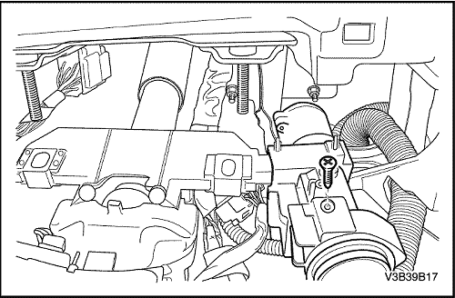
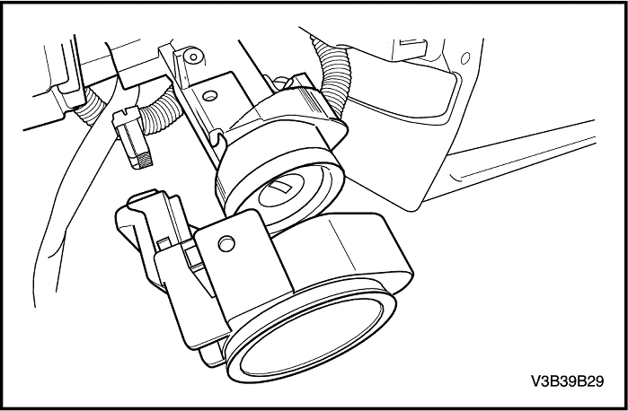

SECCIÓN 9T2
INMOVILIZADOR ANTIRROBO
Precaución: Desconecte el cable negativo de la batería antes de desmontar o instalar cualquier unidad eléctrica o cuando exista la posibilidad de que una herramienta o equipo pueda entrar en contacto con bornes eléctricos expuestos. La desconexión de dicho cable ayudará a evitar lesiones personales y daños al vehículo. La llave de contacto debe estar en posición LOCK a menos que se indique lo contrario.
ESPECIFICACIONES
Especificaciones de apriete
Aplicación | N•m | Árbol de transmisión izquierdo | Articulación |
Tuerca de la columna de la dirección | 22 | 16 | - |
Tornillo de la columna de la dirección | 22 | 16 | - |
DIAGRAMAS DE ESQUEMAS Y DIRECCIONES
Inmovilizador antirrobo
Conducción a izquierdas
Conducción a derechas (excepto Holden)
Conducción a derechas (sólo Holden)
Diesel
Diesel
DIAGNÓSTICO
DTC 33 -
Valor incorrecto de la antena del inmovilizador
descripción del circuito
Cuando se gira la llave de contacto a la posición ON, se alimenta la antena integrada en el módulo de control antirrobo (inmovilizador). Durante ese tiempo el módulo de control electrónico del motor (ECM) envía una señal a la unidad de conmutación inteligente (ISU) solicitando el código de frecuencia. La llave con emisor-receptor tiene un código de seguridad (código de emisor-receptor) que se transmite a través de la antena al módulo de control antirrobo. El módulo de control antirrobo envía el código a la ISU y ésta compara el código recibido con el código del emisor-receptor almacenado. Si se reconoce el código del emisor-receptor, la ISU bloquea la entrada de señal de velocidad al ECM, permitiendo la transferencia del código de frecuencia al ECM. El ECM compara el código de frecuencia recibido con el código de frecuencia programado. Si se reconoce la señal y coincide con la señal programada, se permite la puesta en marcha del motor.
Condiciones para la ejecución del DTC
La tensión de la batería del vehículo debe estar entre 9,0 y 16,0 voltios.
Condiciones para la activación del DTC
Defecto interno del módulo de control antirrobo.
Acción realizada cuando se activa el DTC
- La luz de seguridad se enciende de forma fija con la llave de contacto en posición ON.
- El vehículo no se pone en marcha.
Condiciones para borrar el DTC
- Se borrará el historial del DTC después de 40 ciclos de encendido consecutivos si la anomalía o el fallo ya no están presentes.
- Use un scanner para borrar los DTCs.
DTC 33 - Valor incorrecto de la antena del inmovilizador
Importante: Debe tener todas las llaves del propietario del vehículo antes de realizar la comprobación. Si hubiera que sustituir algún componente, toda llave del vehículo que no se programe durante el procedimiento de programación no funcionará una vez completada la secuencia de programación. Antes de iniciar el procedimiento de programación, asegúrese de que las puertas, el capó y el maletero/portón trasero estén cerrados. Si se pone el sistema en modo de programación, la ISU borrará todos los transmisores previamente programados al recibir la señal de programación del primer transmisor. No utilice o programe los transmisores cerca de otros vehículos que también estén en modo de programación del mando a distancia. Así se evitará programar los transmisores del vehículo equivocado.
| Paso | Medida | Valor(es) | Sí | No |
| 1 | Importante: Lleve a cabo el procedimiento de programación para el módulo de control antirrobo. Sustituya el módulo de control antirrobo. ¿Se ha realizado la sustitución? | - | Vaya al Paso 3 | - |
| 2 | Importante: Lleve a cabo el procedimiento de programación para la ISU. Sustituya la ISU. ¿Se ha realizado la sustitución? | - | Vaya al Paso 3 | - |
| 3 | - Use el scanner para borrar los DTCs.
- Haga funcionar el vehículo en las condiciones requeridas para la ejecución del DTC, según se especifica en esta sección.
¿Se vuelve a activar el DTC? | - | Vaya al Paso 2 | Sistema OK |
DTC 34 -
Ausencia de antena del inmo./ error de enlace
descripción del circuito
Cuando se gira la llave de contacto a la posición ON, se alimenta la antena integrada en el módulo de control antirrobo (inmovilizador). Durante ese tiempo el módulo de control electrónico del motor (ECM) envía una señal a la unidad de conmutación inteligente (ISU) solicitando el código de frecuencia. La llave con emisor-receptor tiene un código de seguridad (código de emisor-receptor) que se transmite a través de la antena al módulo de control antirrobo. El módulo de control antirrobo envía el código a la ISU y ésta compara el código recibido con el código del emisor-receptor almacenado. Si se reconoce el código del emisor-receptor, la ISU bloquea la entrada de señal de velocidad al ECM, permitiendo la transferencia del código de frecuencia al ECM. El ECM compara el código de frecuencia recibido con el código de frecuencia programado. Si se reconoce la señal y coincide con la señal programada, se permite la puesta en marcha del motor.
Condiciones para la ejecución del DTC
La tensión de la batería del vehículo debe estar entre 9,0 y 16,0 voltios.
Condiciones para la activación del DTC
- Circuito abierto en el circuito de alimentación de corriente de 5 V del antirrobo.
- Circuito abierto en el circuito de conexión a masa del antirrobo.
- Cortocircuito con la tensión de 5 V en el circuito amarillo/negro del antirrobo.
Acción realizada cuando se activa el DTC
- La luz de seguridad se enciende de forma fija con la llave de contacto en posición ON.
- El vehículo no se pone en marcha.
Condiciones para borrar el DTC
- Se borrará el historial del DTC después de 40 ciclos de encendido consecutivos si la anomalía o el fallo ya no están presentes.
- Use un scanner para borrar los DTCs.
DTC 34 - Ausencia de antena del inmo./ error de enlace
Importante: Debe tener todas las llaves del propietario del vehículo antes de realizar la comprobación. Si hubiera que sustituir algún componente, toda llave del vehículo que no se programe durante el procedimiento de programación no funcionará una vez completada la secuencia de programación. Antes de iniciar el procedimiento de programación, asegúrese de que las puertas, el capó y el maletero/portón trasero estén cerrados. Si se pone el sistema en modo de programación, la ISU borrará todos los transmisores previamente programados al recibir la señal de programación del primer transmisor. No utilice o programe los transmisores cerca de otros vehículos que también estén en modo de programación del mando a distancia. Así se evitará programar los transmisores del vehículo equivocado.
| Paso | Medida | Valor(es) | Sí | No |
| 1 | - Desconecte la ISU y el módulo de control antirrobo.
- Compruebe si está abierto el circuito de señal de 5 V (VER CL) en el módulo de control antirrobo.
¿Se ha encontrado y corregido la anomalía? | - | Vaya al Paso 9 | Vaya al Paso 2 |
| 2 | Compruebe si está abierto el circuito de señal de conexión a masa (NGR/BCO) en el módulo de control antirrobo. ¿Se ha encontrado y corregido la anomalía? | - | Vaya al Paso 9 | Vaya al Paso 3 |
| 3 | - Conecte la ISU.
- Gire la llave de contacto a la posición ON, sin encender el motor.
- Compruebe si está en cortocircuito con la tensión el circuito de señal de comunicación (AMA/NGR) en el módulo de control antirrobo.
¿Había tensión? | - | Vaya al Paso 4 | Vaya al Paso 5 |
| 4 | - Gire la llave de contacto a la posición OFF.
- Desconecte la ISU.
- Gire la llave de contacto a la posición ON, sin encender el motor.
Compruebe si está en cortocircuito con la tensión el circuito de señal de comunicación (AMA/NGR) en la ISU. | - | Vaya al Paso 9 | Vaya al Paso 8 |
| 5 | Compruebe si hay alguna mala conexión en el conector del cableado de la unidad de conmutación inteligente (ISU). ¿Se ha encontrado y corregido la anomalía? | - | Vaya al Paso 9 | Vaya al Paso 6 |
| 6 | Compruebe si hay alguna mala conexión en el conector del cableado del módulo de control antirrobo. ¿Se ha encontrado y corregido la anomalía? | - | Vaya al Paso 9 | Vaya al Paso 7 |
| 7 | Importante: Lleve a cabo el procedimiento de programación para el módulo de control antirrobo. Sustituya el módulo de control antirrobo. ¿Se ha realizado la sustitución? | - | Vaya al Paso 9 | - |
| 8 | Importante: Lleve a cabo el procedimiento de programación para la ISU. Sustituya la ISU. ¿Se ha realizado la sustitución? | - | Vaya al Paso 9 | - |
| 9 | - Use el scanner para borrar los DTCs. Sustituya la ISU.
- Haga funcionar el vehículo en las condiciones requeridas para la ejecución del DTC, según se especifica en esta sección.
¿Se vuelve a activar el DTC? | - | Vaya al Paso 1 | Sistema OK |
DTC 35 -
Error por antena del inmovilizador de enlace
descripción del circuito
Cuando se gira la llave de contacto a la posición ON, se alimenta la antena integrada en el módulo de control antirrobo (inmovilizador). Durante ese tiempo el módulo de control electrónico del motor (ECM) envía una señal a la unidad de conmutación inteligente (ISU) solicitando el código de frecuencia. La llave con emisor-receptor tiene un código de seguridad (código de emisor-receptor) que se transmite a través de la antena al módulo de control antirrobo. El módulo de control antirrobo envía el código a la ISU y ésta compara el código recibido con el código del emisor-receptor almacenado. Si se reconoce el código del emisor-receptor, la ISU bloquea la entrada de señal de velocidad al ECM, permitiendo la transferencia del código de frecuencia al ECM. El ECM compara el código de frecuencia recibido con el código de frecuencia programado. Si se reconoce la señal y coincide con la señal programada, se permite la puesta en marcha del motor.
Condiciones para la ejecución del DTC
La tensión de la batería del vehículo debe estar entre 9,0 y 16,0 voltios.
Condiciones para la activación del DTC
- Derivación a masa en circuito de alimentación de corriente de 5 V del antirrobo.
- Cortocircuito con la tensión en el circuito de conexión a masa del antirrobo.
- Cortocircuito con la tensión de 5 V en el circuito marrón/blanco del antirrobo.
Acción realizada cuando se activa el DTC
- La luz de seguridad se enciende de forma fija con la llave de contacto en posición ON.
- El vehículo no se pone en marcha.
Condiciones para borrar el DTC
- Se borrará el historial del DTC después de 40 ciclos de encendido consecutivos si la anomalía o el fallo ya no están presentes.
- Use un scanner para borrar los DTCs.
DTC 35 - Error por antena del inmovilizador de enlace
Importante: Debe tener todas las llaves del propietario del vehículo antes de realizar la comprobación. Si hubiera que sustituir algún componente, toda llave del vehículo que no se programe durante el procedimiento de programación no funcionará una vez completada la secuencia de programación. Antes de iniciar el procedimiento de programación, asegúrese de que las puertas, el capó y el maletero/portón trasero estén cerrados. Si se pone el sistema en modo de programación, la ISU borrará todos los transmisores previamente programados al recibir la señal de programación del primer transmisor. No utilice o programe los transmisores cerca de otros vehículos que también estén en modo de programación del mando a distancia. Así se evitará programar los transmisores del vehículo equivocado.
| Paso | Medida | Valor(es) | Sí | No |
| 1 | - Desconecte el módulo de control antirrobo.
- Gire la llave de contacto a la posición ON, sin encender el motor.
- Compruebe si los siguientes circuitos en el módulo de control antirrobo están en cortocircuito con la tensión:
- El circuito de señal de comunicación (MRN/BCO)
- El circuito de señal de conexión a masa (NGR/BCO)
¿Había tensión? | - | Vaya al Paso 2 | Vaya al Paso 3 |
| 2 | - Gire la llave de contacto a la posición OFF.
- Desconecte la ISU.
- Gire la llave de contacto a la posición ON, sin encender el motor.
- Compruebe si los siguientes circuitos en el módulo de control antirrobo están en cortocircuito con la tensión:
- El circuito de señal de comunicación (MRN/BCO)
- El circuito de señal de conexión a masa (NGR/BCO)
¿Se ha encontrado y corregido la anomalía? | - | Vaya al Paso 8 | Vaya al Paso 7 |
| 3 | Compruebe si está derivado a masa el circuito de señal de 5 V (VER CL) en el módulo de control antirrobo. ¿Se ha encontrado y corregido la anomalía? | - | Vaya al Paso 8 | Vaya al Paso 4 |
| 4 | Compruebe si hay alguna mala conexión en el conector del cableado de la unidad de conmutación inteligente (ISU). ¿Se ha encontrado y corregido la anomalía? | - | Vaya al Paso 8 | Vaya al Paso 5 |
| 5 | Compruebe si hay alguna mala conexión en el conector del cableado del módulo de control antirrobo. ¿Se ha encontrado y corregido la anomalía? | - | Vaya al Paso 8 | Vaya al Paso 6 |
| 6 | Importante: Lleve a cabo el procedimiento de programación para el módulo de control antirrobo. Sustituya el módulo de control antirrobo. ¿Se ha realizado la sustitución? | - | Vaya al Paso 8 | - |
| 7 | Importante: Lleve a cabo el procedimiento de programación para la ISU. Sustituya la ISU. ¿Se ha realizado la sustitución? | - | Vaya al Paso 8 | - |
| 8 | - Use el scanner para borrar los DTCs. Sustituya la ISU.
- Haga funcionar el vehículo en las condiciones requeridas para la ejecución del DTC, según se especifica en esta sección.
¿Se vuelve a activar el DTC? | - | Vaya al Paso 1 | Sistema OK |
DTC 36 -
Antena del inmovilizador en cortocircuito con B+
descripción del circuito
Cuando se gira la llave de contacto a la posición ON, se alimenta la antena integrada en el módulo de control antirrobo (inmovilizador). Durante ese tiempo el módulo de control electrónico del motor (ECM) envía una señal a la unidad de conmutación inteligente (ISU) solicitando el código de frecuencia. La llave con emisor-receptor tiene un código de seguridad (código de emisor-receptor) que se transmite a través de la antena al módulo de control antirrobo. El módulo de control antirrobo envía el código a la ISU y ésta compara el código recibido con el código del emisor-receptor almacenado. Si se reconoce el código del emisor-receptor, la ISU bloquea la entrada de señal de velocidad al ECM, permitiendo la transferencia del código de frecuencia al ECM. El ECM compara el código de frecuencia recibido con el código de frecuencia programado. Si se reconoce la señal y coincide con la señal programada, se permite la puesta en marcha del motor.
Condiciones para la ejecución del DTC
La tensión de la batería del vehículo debe estar entre 9,0 y 16,0 voltios.
Condiciones para la activación del DTC
Cortocircuito con la tensión de 12 V en el circuito marrón/blanco del antirrobo.
Acción realizada cuando se activa el DTC
- La luz de seguridad se enciende de forma fija con la llave de contacto en posición ON.
- El vehículo no se pone en marcha.
Condiciones para borrar el DTC
- Se borrará el historial del DTC después de 40 ciclos de encendido consecutivos si la anomalía o el fallo ya no están presentes.
- Use un scanner para borrar los DTCs.
DTC 36 - Antena del inmovilizador en cortocircuito con B+
Importante: Debe tener todas las llaves del propietario del vehículo antes de realizar la comprobación. Si hubiera que sustituir algún componente, toda llave del vehículo que no se programe durante el procedimiento de programación no funcionará una vez completada la secuencia de programación. Antes de iniciar el procedimiento de programación, asegúrese de que las puertas, el capó y el maletero/portón trasero estén cerrados. Si se pone el sistema en modo de programación, la ISU borrará todos los transmisores previamente programados al recibir la señal de programación del primer transmisor. No utilice o programe los transmisores cerca de otros vehículos que también estén en modo de programación del mando a distancia. Así se evitará programar los transmisores del vehículo equivocado.
| Paso | Medida | Valor(es) | Sí | No |
| 1 | - Desconecte el módulo de control antirrobo.
- Gire la llave de contacto a la posición ON, sin encender el motor.
- Compruebe si el circuito de señal de comunicación (MRN/BCO) en el módulo de control antirrobo está en cortocircuito con la tensión de 12 V.
¿Había tensión? | - | Vaya al Paso 4 | Vaya al Paso 3 |
| 2 | - Gire la llave de contacto a la posición OFF.
- Desconecte la ISU.
- Gire la llave de contacto a la posición ON, sin encender el motor.
- Compruebe si el circuito de señal de comunicación (MRN/BCO) en el módulo de control antirrobo está en cortocircuito con la tensión de 12 V.
¿Se ha encontrado y corregido la anomalía? | - | Vaya al Paso 4 | Vaya al Paso 3 |
| 3 | Importante: Lleve a cabo el procedimiento de programación para la ISU. Sustituya la ISU. ¿Se ha realizado la sustitución? | - | Vaya al Paso 4 | - |
| 4 | - Use el scanner para borrar los DTCs.
- Haga funcionar el vehículo en las condiciones requeridas para la ejecución del DTC, según se especifica en esta sección.
¿Se vuelve a activar el DTC? | - | Vaya al Paso 1 | Sistema OK |
DTC 37 -
Antena del inmovilizador derivada a masa/abierta
descripción del circuito
Cuando se gira la llave de contacto a la posición ON, se alimenta la antena integrada en el módulo de control antirrobo (inmovilizador). Durante ese tiempo el módulo de control electrónico del motor (ECM) envía una señal a la unidad de conmutación inteligente (ISU) solicitando el código de frecuencia. La llave con emisor-receptor tiene un código de seguridad (código de emisor-receptor) que se transmite a través de la antena al módulo de control antirrobo. El módulo de control antirrobo envía el código a la ISU y ésta compara el código recibido con el código del emisor-receptor almacenado. Si se reconoce el código del emisor-receptor, la ISU bloquea la entrada de señal de velocidad al ECM, permitiendo la transferencia del código de frecuencia al ECM. El ECM compara el código de frecuencia recibido con el código de frecuencia programado. Si se reconoce la señal y coincide con la señal programada, se permite la puesta en marcha del motor.
Condiciones para la ejecución del DTC
La tensión de la batería del vehículo debe estar entre 9,0 y 16,0 voltios.
Condiciones para la activación del DTC
- Derivación a masa en el circuito marrón/blanco del antirrobo.
- Circuito abierto en el circuito marrón/blanco del antirrobo.
- Circuito abierto en el circuito amarillo/negro del antirrobo.
Acción realizada cuando se activa el DTC
- La luz de seguridad se enciende de forma fija con la llave de contacto en posición ON.
- El vehículo no se pone en marcha.
Condiciones para borrar el DTC
- Se borrará el historial del DTC después de 40 ciclos de encendido consecutivos si la anomalía o el fallo ya no están presentes.
- Use un scanner para borrar los DTCs.
DTC 37 - Antena del inmovilizador derivada a masa/abierta
Importante: Debe tener todas las llaves del propietario del vehículo antes de realizar la comprobación. Si hubiera que sustituir algún componente, toda llave del vehículo que no se programe durante el procedimiento de programación no funcionará una vez completada la secuencia de programación. Antes de iniciar el procedimiento de programación, asegúrese de que las puertas, el capó y el maletero/portón trasero estén cerrados. Si se pone el sistema en modo de programación, la ISU borrará todos los transmisores previamente programados al recibir la señal de programación del primer transmisor. No utilice o programe los transmisores cerca de otros vehículos que también estén en modo de programación del mando a distancia. Así se evitará programar los transmisores del vehículo equivocado.
| Paso | Medida | Valor(es) | Sí | No |
| 1 | - Desconecte el módulo de control antirrobo.
- Compruebe si el circuito de señal de comunicación (MRN/BCO) en el módulo de control antirrobo está derivada a masa.
¿Había tensión? | - | Vaya al Paso 2 | Vaya al Paso 3 |
| 2 | - Desconecte la ISU.
- Compruebe si el circuito de señal de comunicación (MRN/BCO) en el módulo de control antirrobo está derivada a masa.
¿Se ha encontrado y corregido la anomalía? | - | Vaya al Paso 6 | Vaya al Paso 5 |
| 3 | - Desconecte la ISU.
- Compruebe si están abiertos los dos circuitos de señal de comunicación (MRN/BCO y AMA/NGR) en el módulo de control antirrobo.
¿Se ha encontrado y corregido la anomalía? | - | Vaya al Paso 6 | Vaya al Paso 4 |
| 4 | Compruebe si hay alguna mala conexión en el conector del cableado de la unidad de conmutación inteligente (ISU). ¿Se ha encontrado y corregido la anomalía? | - | Vaya al Paso 8 | Vaya al Paso 7 |
| 5 | Compruebe si hay alguna mala conexión en el conector del cableado del módulo de control antirrobo. ¿Se ha encontrado y corregido la anomalía? | - | Vaya al Paso 8 | Vaya al Paso 6 |
| 6 | Importante: Lleve a cabo el procedimiento de programación para el módulo de control antirrobo. Sustituya el módulo de control antirrobo. ¿Se ha realizado la sustitución? | - | Vaya al Paso 8 | - |
| 7 | Importante: Lleve a cabo el procedimiento de programación para la ISU. Sustituya la ISU. ¿Se ha realizado la sustitución? | - | Vaya al Paso 8 | - |
| 8 | - Use el scanner para borrar los DTCs.
- Haga funcionar el vehículo en las condiciones requeridas para la ejecución del DTC, según se especifica en esta sección.
¿Se vuelve a activar el DTC? | - | Vaya al Paso 1 | Sistema OK |
El inmovilizador antirrobo no funciona
| Paso | Medida | Valor(es) | Sí | No |
| 1 | ¿Se ha realizado la comprobación del inmovilizador antirrobo? | - | Vaya al Paso 2 | - |
| 2 | Sustituya el módulo del inmovilizador. ¿Se ha realizado la sustitución? | - | Vaya al Paso 4 | - |
| 3 | Sustituya la ISU. ¿Se ha realizado la sustitución? | - | Vaya al Paso 4 | - |
| 4 | Ponga en marcha el sistema para verificar la reparación. ¿Se ha corregido la anomalía? | - | Sistema OK | - |
MANTENIMIENTO Y REPARACIÓN
Servicio en el vehículo
Proceso de codificación de llaves
Precaución: Cuando memorice la llave con el emisor-receptor, no tome las llaves al mismo tiempo.
Precaución: Después de girar la llave de contacto a la posición ON, la línea K se corta 3 segundos como máx.
Precaución: Si se memoriza el emisor-receptor, también se memoriza automáticamente el mando a distancia de las puertas (RKE).
Precaución: No debe olvidarse ni perderse el código de acceso de la llave maestra.
- Instale el cartucho de la unidad de control del inmovilizador en el scanner.
- Gire la llave de contacto a la posición OFF.
- Conecte el scanner.
- Gire el contacto a la posición ON con la llave que vaya a codificarse.
- Introduzca la contraseña de cuatro dígitos que permite al personal del taller usar el scanner para codificar llaves.
- Use el mandato del scanner.
- Verifique que la codificación de llaves haya sido correcta arrancando el motor con cada una de las llaves autorizadas.
Sustitución de la ISU
Si una unidad de control ISU en modo virgen no detecta alguna transición con llave de contacto en posición ON al usar una llave maestra, esperará a que se inicie la memorización de llave con solicitud de diagnóstico que permitirá conocer el código de acceso registrado en la fábrica correspondiente al vehículo.
Caso A
Si la primera llave detectada en la transición con llave de contacto en posición ON está bloqueada y bien programada (autenticación por encriptación), la ISU memoriza el número de serie de dicha llave (usada como identificador) y valida la llave (aumentando el número de llaves memorizadas). Entonces, pueden memorizarse 1 llave más por medio de transiciones con llave de contacto en posición ON sea cual sea el estado de las llaves (bloqueado o virgen).
El proceso de memorización finaliza:
- - Por validación con fin de memorización de llave con solicitud de diagnóstico. Las llaves se guardan definitivamente, se establece la memorización satisfactoria de las llaves con señalizador y la ISU pasa a funcionamiento en modo nominal (modo memorizado). Está lista entonces para emitir el código VIN a la unidad de control EMS en la siguiente transición con llave de contacto en posición ON.
- - Por cancelación con memorización de llave con cancelación de solicitud de diagnóstico o fin de intervalo de espera, o corte de alimentación de corriente. La ISU recupera entonces su anterior configuración (modo virgen).
Caso B
Si la primera llave detectada en la transición con llave de contacto en posición ON está bloqueada pero no está bien programada (autenticación por encriptación), la llave será rechazada, pero el modo de memorización seguirá activo.
Es posible emplear otra llave (en caso de llave equivocada) o reiniciar el procedimiento de memorización introduciendo otro código de acceso (en caso de código equivocado).
El modo de memorización termina del mismo modo que el caso anterior.
Caso C
Si la primera llave detectada en la transición con llave de contacto en posición ON es virgen (no está bloqueada), hay que tener en cuenta el valor del parámetro CALAVCOL:
Este parámetro permite la sustitución simultánea de la ISU y el juego de llaves.
- - Si CALAVCOL = 1, la ISU memoriza esta llave (programándola, autentificándola y por último bloqueándola), pero abandona el modo de memorización, no acepta ninguna otra llave y pasa a funcionamiento en modo nominal (modo memorizado). La llave secreta KTR aún no se valida y puede cambiarse iniciando la memorización de llave con solicitud de diagnóstico, introduciendo para ello otro código de acceso (de llave maestra virgen).
Esto permite verificar que el sistema inmovilizador esté bien sincronizado (con la unidad de control EMS) mediante una prueba de arranque. La KTR se valida automáticamente tras 10 transiciones con llave de contacto en posición ON, o con una validación por solicitud de diagnóstico. El estado de validación de KTR se guarda para poder contrarrestar un corte de alimentación de corriente. Pueden memorizarse otras llaves ejecutando el procedimiento de afectación de llaves nuevas.
- Si CALAVCOL = 0, la llave es rechazada y se cancela el procedimiento de memorización en cuanto se gira la llave de contacto a la posición OFF (la ISU recupera su configuración anterior: modo virgen).
En tal caso hay que iniciar de nuevo el procedimiento.
Sustitución de llaves
Este es el procedimiento que se utiliza en el mercado de repuestos para sustituir las llaves o para memorizar llaves adicionales.
Cuando una unidad de control ISU en modo memorizado recibe el inicio de memorización de llave con solicitud de diagnóstico que permite conocer el código de acceso registrado en la fábrica correspondiente al vehículo,
- - Si la llave detectada en la transición con llave de contacto en posición ON está bloqueada, la ISU trata de autenticarla.
Si la llave está bien programada (autenticación por encriptación), la ISU memoriza el número de serie de dicha llave (usada como identificador) y valida la llave (aumentando el número de llaves memorizadas).
Si no, la llave es rechazada: la memorización de dicha llave no tiene éxito.
La ISU espera una nueva transición con llave de contacto en posición ON.
- - Si la llave detectada en la transición con llave de contacto en posición ON es virgen (no está bloqueada), la ISU memoriza la llave (programándola, autenticándola y por último bloqueándola).
El proceso de memorización finaliza:
- - Por validación con fin de memorización de llave con solicitud de diagnóstico. Las llaves se guardan definitivamente, se establece la memorización satisfactoria de las llaves con indicador y la ISU pasa a funcionamiento en modo nominal (modo memorizado). Está lista entonces para emitir el código VIN a la unidad de control EMS en la siguiente transición con llave de contacto en posición ON.
- - Por cancelación con memorización de llave con cancelación de solicitud de diagnóstico o fin de intervalo de espera, o corte de alimentación de corriente.
Retroalimentación externa
Parte de la información contenida en las tramas de datos se actualizan durante la memorización de las llaves y permiten al operador seguir el procedimiento y realizar un diagnóstico en caso de que dicho procedimiento no salga bien:
- - El emisor-receptor de la llave está bloqueado.
- - Se trata de una llave maestra.
- - Se trata de una llave RF.
- - Estado de memorización de la ISU (modo memorizado / modo virgen).
- - Número de llaves memorizadas.
- - Memorización de la primera llave satisfactoria (sólo fábrica).
- - Memorización satisfactoria de las llaves.
- - Estado de cada llave RF (memorizado / sincronizado).


Preamplificador (demodulador del inmovilizador)
(Indicado para conducción a izquierdas, conducción a derechas similar)
Procedimiento de desmontaje
- Desconecte el cable negativo de la batería.
- Desmonte el apoyo de la rodilla. Consulte la Sección 9G, Guarnecido interior.
- Desmonte el panel de acabado del cuadro de instrumentos. Consulte la Sección 9E, Instrumentación/información para el conductor.

- Desmonte la tapa superior e inferior de la columna de la dirección. Consulte la Sección 6E, Volante y columna de dirección.
- Quite las tuercas y los tornillos que sujetan la columna de la dirección. Consulte la Sección 6E, Volante y columna de dirección.
- Desenchufe el conector eléctrico de la columna de la dirección. Consulte la Sección 6E, Volante y columna de dirección.
- Baje la columna de la dirección.

- Quite el tornillo y desmonte el preamplificador (demodulador del inmovilizador).
procedimiento de montaje
- Monte el preamplificador (demodulador del inmovilizador) con su tornillo.
- Levante la columna de la dirección.
- Enchufe el conector eléctrico de la columna de la dirección. Consulte la Sección 6E, Volante y columna de dirección.
- Coloque las tuercas y los tornillos que sujetan la columna de la dirección. Consulte la Sección 6E, Volante y columna de dirección.
- Coloque las tuercas y los tornillos que sujetan la columna de la dirección. Consulte la Sección 6E, Volante y columna de dirección.
- Monte el panel de acabado del cuadro de instrumentos. Consulte la Sección 9E, Instrumentación/información para el conductor.
- Monte el apoyo de la rodilla. Consulte la Sección 9G, Guarnecido interior.
- Conecte el cable negativo de la batería.
DESCRIPCIÓN GENERAL Y FUNCIONAMIENTO DEL SISTEMA
Sistema inmovilizador
El propósito del sistema inmovilizador es dotar al vehículo con un sistema antirrobo adicional incorporado para impedir un uso no autorizado del coche. La comprobación de la autorización de usuario se realiza por medio de una llave de contacto cuyo cabezal integra un emisor-receptor encriptado. El sistema descrito es un inmovilizador basado en un emisor-receptor (transpondedor) para un vehículo automóvil.
Los productos que constituyen la aplicación son los siguientes:
- Hasta 4 llaves de contacto con emisor-receptor integrado en el cabezal de la llave. - La antena (bobina toroidal) para alimentar y comunicarse con el emisor-receptor con su controlador modulador/demodulador electrónico integrado. - La unidad de control ISU (unidad de conmutación inteligente), en la que se gestiona la función del inmovilizador. - La unidad de control ECM (módulo de control electrónico del motor). - El indicador de estado externo (LED) para visualizar el estado del inmovilizador. - El enlace de datos serie entre la ISU y la unidad de control EMS. - El enlace de datos y el enlace de alimentación entre la unidad de control ISU y la antena más los componentes estándar, de acuerdo con el protocolo estándar de diagnóstico Keyword Protocol 2000: - El comprobador de diagnóstico. - El enlace de datos serie (línea K) entre el comprobador y el ECM (módulo de control electrónico) del vehículo. En el presente documento sólo se describen los requisitos de la unidad de control ISU y de la unidad de control ECM relacionados con el inmovilizador.
Llave con emisor-receptor integrado
La llave consta de:
- Una pieza metálica (llave metálica). - Un componente emisor-receptor. - Envuelta superior e inferior. La llave de control remoto por radiofrecuencia (llave FR/TR) incluye también una PCB electrónica para el transmisor, un conjunto de botones y una pila.
El emisor-receptor usado es el emisor-receptor encriptado TIRIS DST.
Antena (bobina toroidal)
La antena es una bobina toroidal que permite generar el campo electromagnético necesario para el funcionamiento del emisor-receptor.
La antena va montada en la cerradura del contacto. Se conecta al controlador de la antena (PCB electrónica integrada en el cuerpo de la bobina).
Este controlador se conecta a la unidad de control ISU mediante un conector de cuatro terminales.
La antena se emplea en el funcionamiento del emisor-receptor, basándose en un principio de función secuencial:
- Fase de alimentación (carga) del emisor-receptor, durante el cual la antena genera un campo electromagnético usando una frecuencia de 134,2 kHz; este campo induce energía al emisor-receptor por medio de este circuito resonante. - Fase de escritura: sirve para transferir comandos, direcciones y datos al emisor-receptor; el principio es una modulación de impulsos en duración del anterior campo electromagnético. - Fase de lectura: la antena actúa como receptora, demodulando la señal de respuesta del emisor-receptor que es modulada con manipulación de desplazamiento de frecuencia. Unidad de conmutación inteligente (ISU)
Tareas
La ISU es la unidad de control de la carrocería del coche y se encarga de funciones tales como el control de los actuadores, el control de acceso al vehículo o la función de alarma.
Las unidades de control ISU y ECM comparten la función del inmovilizador.
Las tareas de la ISU relacionadas con el inmovilizador son:
- Comunicación con el emisor-receptor de la llave tras la transición con llave de contacto en posición ON (identificación y autenticación de la llave, memorización de las llaves). - Comunicación con la unidad de control ECM después de girar la llave de contacto a la posición ON (recepción de la solicitud del ECM y transmisión del mensaje de desbloqueo). - Control del indicador de estado del inmovilizador (LED). - Comunicación con el comprobador de diagnóstico (diagnóstico de memorización de llaves). Función del inmovilizador
La función del inmovilizador de la unidad de control ISU tiene tres modos principales:
- El modo activo del inmovilizador, seleccionado cuando la llave de contacto está en posición OFF. En este modo, el indicador de estado (LED) se acciona en modo A o B (véase el capítulo sobre el indicador de estado), dependiendo del estado de la función de alarma (activado o desactivado) (no es posible arrancar). - El modo nominal, seleccionado cuando la llave de contacto está en posición ON y se verifica la situación de modo nominal. Es el modo actual en uso. En este modo se tienen en cuenta 2 estados de función: - Estado bloqueado: en este estado el vehículo debería quedarse inmovilizado (no es posible arrancar).
- Estado desbloqueado: en este estado el vehículo puede moverse (es posible arrancar).
- El modo de memorización, seleccionado cuando la llave de contacto está en posición ON y se verifica la situación de modo memorización. Enlace de datos serie
Los datos serie pueden intercambiarse entre un scanner, el módulo de control electrónico del motor (ECM) y la unidad de conmutación inteligente (ISU). La conexión del scanner se hace al conector de diagnóstico (DLC).
Módulo de control electrónico del motor (ECM)
Cuando el módulo de control electrónico del motor (ECM) detecta que se ha girado la llave de contacto a la posición ON, espera a recibir el mensaje de desbloqueo procedente de la unidad de conmutación inteligente. Si no se recibe el mensaje de desbloqueo en el tiempo especificado, el ECM impide el funcionamiento del motor. El motor tampoco funciona si el código de identificación (ID) transmitido por la unidad de conmutación inteligente no coincide con el código almacenado en la memoria del ECM. La inmovilización sigue en vigor hasta que se gira la llave de contacto a la posición OFF o se corta la alimentación de corriente de la batería.
Para impedir que alguien conduzca el vehículo, el ECM emplea la siguiente estrategia:
- El módulo de encendido entra en modo de derivación.
- El ECM no generará una salida de señal de activación del encendido electrónico (EST), de modo que la bobina de encendido no producirá chispa alguna.
- El ECM no activará la bomba de combustible.
- El ECM no activará los inyectores de combustible.
La comunicación de datos serie se transmite por un solo cable entre la unidad de conmutación inteligente y el ECM.
Durante los procedimientos de diagnóstico o cambio de códigos de identificación hay que sumar un scanner al sistema de comunicación.
No se puede intercambiar un ECM con unidad de conmutación inteligente por otro sin unidad de control del inmovilizador.